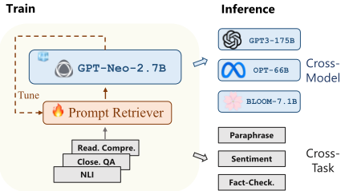
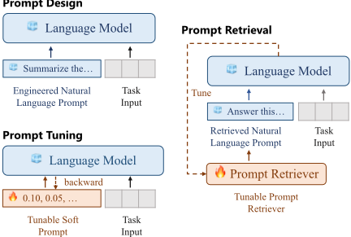
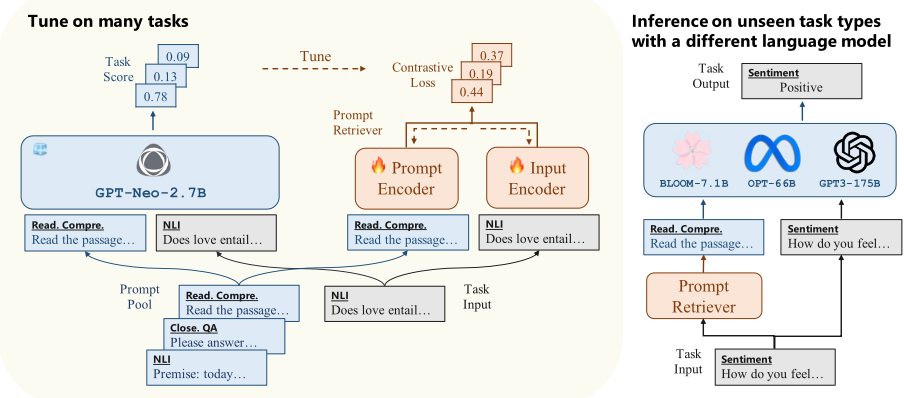
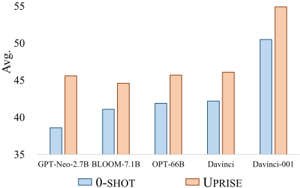
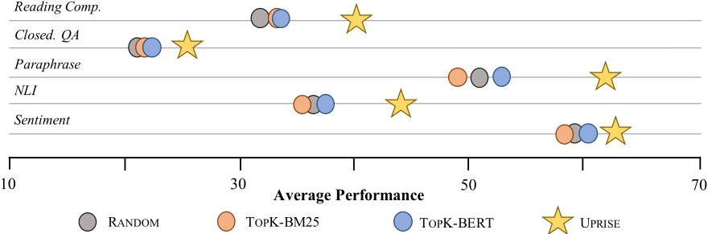
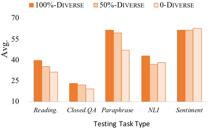

UPRISE：面向 Zero-Shot 评测提升的通用 Prompt 检索
LLM 在零样本场景下依赖人工提示设计或模型微调，而为特定任务设计的提示难以泛化到未见任务类型。UPRISE 提出 retrieve then predict 范式：用多任务训练示例构建 Prompt 池，以冻结小模型 GPT-Neo-2.7B 对 prompt-input 拼接打分标注正负例，再用 InfoNCE 对比学习训练一个轻量 BERT-base 双编码器检索器；推理时为新输入检索 top-3 示例拼接后交给冻结 LLM。关键结论是检索器具备跨任务与跨模型通用性：在未见任务上 Reading Comprehension 与 Paraphrase Detection 分别取得 8.5% 与 14.6% 绝对提升；用 2.7B 小模型调优的检索器可直接迁移到 BLOOM-7.1B、OPT-66B、GPT3-175B 等更大模型；在 ChatGPT 事实验证任务上还能缓解幻觉。此外其效果接近甚至超过随机采样的 vanilla few-shot，并优于 BM25、SBERT 等通用检索基线。
在严格零样本设置下提示设计者是盲的，为单一任务设计或调优的提示无法确定能否泛化到未见任务类型；同时微调 LLM 受算力与模型权重可得性限制，且模型持续迭代导致重复调优成本不断累积。论文目标是训练一个轻量、通用的 Prompt 检索器，为任意零样本任务输入自动从预构建 Prompt 池中检索有效提示，且无需针对新任务或新推理模型再次调优。
UPRISE 将提示过程分解为两步：(1) 数据构建——用 FLAN 指令模板把多任务数据集转成自然语言指令，Prompt 池由其余任务簇的训练示例（输入与标签补全拼接的 demonstration）构成；(2) Prompt 打分——用冻结小模型 GPT-Neo-2.7B 对 prompt-input 拼接按任务指标（F1/ROUGE/accuracy×归一化似然）打分，最高分者为正例，随机采样的异任务示例与同任务低分示例作为（难）负例；为控制成本每条训练示例只随机打分 L=50 条同任务 Prompt，难例最多重采样 7 轮；(3) 检索器调优——以 BERT-base 初始化的双编码器（输入编码器 + Prompt 编码器），用 InfoNCE 对比损失训练 3 个 epoch；(4) 推理——对 Prompt 池编码建索引，最大内积检索 top-K（K=3）条 Prompt 与输入拼接后送入冻结 LLM 预测。
跨任务（GPT-Neo-2.7B）：Reading Comprehension 与 Paraphrase Detection 分别取得 8.5% 与 14.6% 的绝对提升；Closed-book QA 与 Natural Language Inference 簇内所有任务一致提升
跨模型：用 GPT-Neo-2.7B 调优的检索器在 BLOOM-7.1B、OPT-66B、Davinci、text-davinci-001 上对 Reading Comprehension、Closed-book QA、Paraphrase Detection 一致提升；五任务簇平均性能在所有 LLM 上均有提升
ChatGPT 幻觉缓解：在 TruthfulQA、FEVER2.0、Covid-19 事实验证任务上优于 vanilla zero-shot（人工评估分别 66/100/100 条样本）
检索器消融：优于 RANDOM、TOPK-BM25、TOPK-BERT（KATE/SBERT）等通用检索基线，说明与输入的词级/句级相似度并非好 Prompt 的决定因素
Prompt 池消融：任务示例构成的 Prompt 池在所有测试任务簇上优于 wikitext103 原始文本
与 few-shot 对比：UPRISE 在多数任务上接近甚至超过 vanilla few-shot；UPRISE-ALL-TARGET（全任务训练的统一检索器）提升显著
负向结果：Commonsense Reasoning 与 Coreference Resolution 上性能下降——后者几乎不能从示例获益，前者受检索示例（Closed-book QA）与任务格式不一致影响
训练数据多样性：任务类型减半（50%-DIVERSE）后性能下降，但在多数任务上仍优于 0-SHOT；问题/答案类型多样的任务簇（如 Reading Comprehension、Closed-book QA）最具泛化性
以往微调式 Prompt 检索（EPR、CEIL 等）面向任务特定场景：在目标任务训练集上构建 Prompt 池并在对应测试集评估。UPRISE 的主要区别是把检索器做成通用的：跨任务（在部分任务簇上训练、直接为未见任务类型检索）与跨模型（用 2.7B 小模型调优、无需再调优即可服务于 7B~175B 级不同来源的大模型），并进一步展示 Prompt 检索可缓解 ChatGPT 的幻觉问题，将其归因于有效推理机制而非仅外部记忆缺失。
相关度级别：high
命中能力域：3.1 上下文工程与记忆 | 3.2 提示工程 | 3.5 评测与可靠使用
理由：论文直接命中 3.2 提示工程的核心技术：自动提示选择/优化、in-context learning 示例选择、以及把 Prompt 池作为提示词资产进行管理与复用；同时命中 3.1 上下文工程——通过检索为新输入动态组织上下文（示例拼接），属于检索增强在提示层面的应用。其'用小模型离线打分标注、只调优轻量检索器、服务任意更大模型'的范式与团队'用好模型而非训练模型'的定位高度契合，跨模型迁移结论对工程选型尤其有价值。ChatGPT 幻觉缓解实验与 3.5 的可靠性使用相关。对团队的知识库问答、文档、测试辅助等零样本/少样本场景，这是 ICL 示例自动选择与提示资产化的代表性方法。
建议动作：深入精读并做内部分享
arXiv:2303.08518v4 [cs.CL] 2023年12月16日
微软
daixuancheng6@gmail.com bijunyu21@mails.ucas.ac.cn
{shaohanh, yuefzh, jianfengliu, yujing.wang, hasun, fuwei, dedeng, qizhang}@microsoft.com
大语言模型（Large Language Models, LLMs）因其出色的能力而广受欢迎，但对模型特定微调或任务特定提示工程的需求可能会阻碍其泛化能力。我们提出了 UPRISE（Universal Prompt Retrieval for Improving Zero-Shot Evaluation，用于改进零样本评估的通用提示检索），该方法微调了一个轻量且通用的检索器，可为给定的零样本任务输入自动检索提示。具体而言，我们在跨任务和跨模型场景中展示了其通用性：检索器在多样化任务上进行微调，却在未见过的任务类型上进行测试；我们使用一个小型冻结的 LLM（GPT-Neo-2.7B）来微调检索器，却在规模大得多的不同 LLM 上测试该检索器，例如 BLOOM-7.1B、OPT-66B 和 GPT3-175B。此外，我们在 ChatGPT 上的实验表明，UPRISE 能够缓解幻觉问题，这表明它甚至有潜力改进最强大的 LLM。我们的模型和代码已在 https://github.com/microsoft/LMOps 公开。
诸如 GPT-3 (Brown et al., 2020)、OPT (Zhang et al., 2022) 和 BLOOM (Scao et al., 2022) 等大型语言模型（LLM）已在广泛的任务中展现出令人瞩目的能力。近期研究提出了两种进一步提升其性能的主要方法：微调 LLM 使其遵循提示 (Hu et al., 2022; Houlsby et al., 2019; Zaken et al., 2022; Wei et al., 2022a; Sanh et al., 2022)，以及开发提示工程技术来引导 LLM (Brown et al., 2020; Wei et al., 2022b; Liu et al., 2021; Lester et al., 2021)。
微调 LLM 会调整其权重以适配特定的提示。然而，这可能受到计算资源限制或模型权重不可获取的制约 (Hu et al., 2022)。多任务微调提供了一种提升零样本任务泛化能力的替代途径 (Wei et al., 2022a; Sanh et al., 2022)，这在一定程度上证明了微调成本的合理性。然而，LLM 的持续演进使得人们需要不断微调新模型，令累积的微调成本成为一个重大隐忧。
∗ 通讯作者

提示工程通过构建提示来引导冻结的 LLM。提示设计添加一个经过设计的自然语言提示，以教会 LLM 进行上下文学习（in-context learning）(Brown et al., 2020)，或诱导 LLM 进行推理 (Wei et al., 2022b)。提示微调（prompt tuning）添加一个由连续参数表示的软提示（soft prompt），并通过梯度传播对其进行优化 (Liu et al., 2021; Li and Liang, 2021; Lester et al., 2021)。虽然这些方法能够提升特定任务的性能，但由于提示设计者在严格的零样本设置中是“盲”的 (van de Kar et al., 2022)，为某一任务设计的提示能否泛化到未见过的任务类型仍不确定。
在本文中，我们提出 UPRISE（Universal Prompt Retrieval for Improving Zero-Shot Evaluation，用于改进零样本评估的通用提示检索），它微调一个轻量且通用的检索器，在给定零样本任务输入的情况下，自动从预先构建的提示池中检索提示。如图 1 所示，该检索器被训练为面向多个任务检索提示，从而使其能够在推理阶段泛化到未见过的任务类型。此外，我们证明了这种跨任务能力能够很好地从小型 LLM 泛化到规模大得多的不同 LLM：我们使用 GPT-Neo-2.7B (Black et al., 2021) 来指导检索器的微调，并在 BLOOM-7.1B (Scao et al., 2022)、OPT-66B (Zhang et al., 2022) 和 GPT3-175B (Brown et al., 2020) 上评估该检索器的性能。UPRISE 的跨模型与跨任务泛化能力使其成为面向真实世界应用的一个有前景且实用的解决方案。
此外，我们的方法展示了甚至能够增强最强大 LLM 的潜力，正如我们在 ChatGPT 上的实验所示。尽管 ChatGPT 能力令人印象深刻，但研究发现它存在严重的幻觉问题，导致回答在事实上不准确（Bang et al., 2023）。然而，UPRISE 能够在事实核查任务上解决这一问题，其方式是通过提示模型从其内置知识中得出正确的推断。
总而言之，我们的贡献包括：
我们旨在通过训练一个提示检索器（prompt retriever），为任意给定的任务输入检索提示（prompt）¹，从而提升大语言模型（LLM）的零样本（zero-shot）性能。具体而言，UPRISE 将提示过程分解为两个步骤：先检索后预测（retrieve then predict）。给定输入 x，我们首先从预先构建的提示池 P 中检索出一组正提示 P+：
随后，我们将 P+ 与 x 拼接，构成冻结 LLM 的输入序列，由该 LLM 生成预测输出：
1 “提示”有时指由输入示例填充而成的自然语言模板，但在此处它表示前置到任务输入之前的序列。

我们的目标是通过更新检索器 R，优化 y P+ 的性能，使其匹配目标 y。
图 2 将提示检索与典型的提示工程方法进行了比较：提示设计添加一个人工设计的自然语言提示（Brown et al., 2020; Wei et al., 2022b），而提示调优则调优一个软提示（Liu et al., 2021; Lester et al., 2021）。相比之下，提示检索调优一个检索器来检索自然语言提示，这种方式既具备可解释性又灵活。它利用语言模型本身将池中的每个提示标注为正/负，然后依据该信号调优检索器（Rubin et al., 2022）。这种微调式的提示检索已在任务特定场景中展现出有效性（Rubin et al., 2022; Ye et al., 2023）：以训练集作为提示池，在一个或多个特定任务上对提示检索器进行调优，随后在相应的测试集上对该检索器进行评估。
我们的工作在于实现提示检索器的通用性，即微调后的检索器可以直接用于为未见过的任务以及各种用于推理的 LLM 检索提示，而无需进一步调优。我们从两个视角定义这种通用性：跨任务检索与跨模型检索。
跨任务检索。考虑到现实应用中任务的多样性，我们提出跨任务检索，即为提示检索器未曾训练过的任务类型执行检索。我们通过在未见过的任务类型上评估提示检索器来模拟这一设定：将各种任务按其任务类型划分为不同的簇，并在其余所有簇上训练检索器，同时将每个任务簇留出用于评估（Wei et al., 2022a）。
跨模型检索。由于使用大规模 LLM 调优提示检索器的成本高昂，我们提出评估从小 LLM 泛化到大 LLM 的能力。具体而言，我们使用一个相对较小的 LLM 来调优检索器，而使用一个大得多的 LLM 进行推理。此外，我们建议探索不同 LLM 来源之间的可迁移性，因为存在由不同公司或机构开发的 LLM。
如图 3 所示，UPRISE 使用一个冻结的 LLM 来监督提示检索器在多样化任务上的微调，然后在推理阶段使用该训练好的检索器为不同 LLM 下的未见任务类型检索提示。在本节中，我们将详细阐述我们的数据构建、提示评分、检索器调优以及推理流程。
任务数据。我们使用来自 FLAN (Wei et al., 2022a) 的指令模板，将任务数据集转换为自然语言指令 2。每个任务数据集对应大约七个模板。对于每个数据样例 (x_i, y_i)，我们随机选取七个模板中的一个，将 x_i 转换为任务输入，将 y_i 转换为标签补全。选项后缀和换行符 '\n' 会从任务输入中自动移除，以使文本格式更接近预训练语料库的格式，从而提升提示性能 (van de Kar et al., 2022)。
提示池。对于每个测试簇，用于检索的提示池由其余任务簇（即用于训练检索器的簇）的训练演示构成。这受到了上下文学习（in-context learning）(Brown et al., 2020) 的启发，后者在任务输入之前呈现少量训练演示以提升模型性能。每个演示由任务输入和标签补全拼接而成。我们的动机在于：尽管测试输入与演示属于不同的任务类型，但测试输入仍可能从检索到的演示中相似的问题类型、主题或推理链中获益。
2 我们排除了会“反转任务”的模板，例如要求情感分类任务生成一篇影评。
对于训练簇中的每个训练样本 ( x i , y i )，我们从提示池 P = { p j } N P j =1 中收集一组正提示和负提示，其中正提示表示冻结的大语言模型（LLM）在以提示-输入拼接为条件时能够取得良好的任务分数。我们使用这些正负标签来监督检索器的对比学习。
我们将所有任务划分为两类问题类型：文本补全（text completion）和多选题（multiple choice）(Brown et al., 2020)，并针对每个训练样本采用不同的方法对提示进行评分。
文本补全是指进行自由形式补全的问题。我们使用以下公式计算提示的分数：
其中 y p j i = LM ( y p j i | p j ⊕ x i ) 是基于输入拼接 p j ⊕ x i 得到的模型预测，⊕ 是文本分隔符 ' \ n '。metric ( · ) 是用于计算任务度量分数的函数（例如 F1 或 ROUGE）。
多选题是指从若干选项中选出一个正确补全的问题。假设多选题 ( x i , y i , { o m } M m =1 ) 中有 M 个选项，其中 { o m } M m =1 是选项集合，o y i 是标准答案选项。我们将拼接 p j ⊕ x i 输入 LLM，并计算每个选项的逐 token 似然：LH( o m )。似然最高的选项被视为模型预测 y p j i (Brown et al., 2020)。
预测的准确率 acc ( y i , y p j i ) 是多选题的常用度量，但它对每个样本只能产生 0 或 1，因而难以比较提示的有效性。为解决这一问题，我们将准确率乘以标准答案选项的逐 token 似然（该似然由所有选项的逐 token 似然之和进行归一化），以实现细粒度的比较。最终分数的公式如下：
提示过滤（Prompt filtering）。直观上，为了给每个训练样本收集正提示和负提示，我们需要对提示池中的每个提示进行评分，并将取得最佳分数的提示识别为正提示。反之，导致最差分数的提示则被标记为负提示。然而，即使使用相对较小的 LLM，对所有提示进行评分的计算代价也可能十分高昂 (Rubin et al., 2022)。

为解决这一问题，我们仅对随机采样的 L 个演示组成的子集进行评分；每个演示被约束为与训练样本 ( x i , y i ) 具有相同的任务。这受到了上下文学习的启发：在上下文学习中，测试样本与训练演示共享相同的任务，从而带来任务分数的提升。通过对演示子集进行评分，我们在显著降低计算成本的同时，提高了在采样子集中识别出正提示的可能性。
此外，在问题较难的情况下，所有 L 个提示-输入拼接的得分可能均为 0。为解决这一问题，我们重复采样过程，对与 ( x i , y i ) 任务相同的另一个包含 L 个提示的子集进行打分，直到找到至少一个得分大于 0 的提示。
对于某个训练示例的所有已打分提示，我们将得分最高的提示标注为正样本。对于负样本，我们从提示池中随机采样 B 个训练演示，每个演示的任务均与 ( x i , y i ) 的任务不同。此外，我们将已采样提示中对应最低 B 个得分的 B 个演示标注为难负样本（hard negatives），它们与 ( x i , y i ) 属于同一任务，但效果较差。
在为每个训练示例标注提示后，我们将收集到的数据划分为两个集合：90% 用于训练，10% 用于验证。提示检索器是一个双编码器（bi-encoder）模型（Karpukhin et al., 2020），其中输入编码器 E X ( · ) 以任务输入 x i 作为输入，提示编码器 E P ( · ) 以提示 p j 作为输入。
为了训练提示检索器，我们使用 InfoNCE（van den Oord et al., 2018）损失，对于正样本提示-输入对，最大化编码后的提示与输入之间的相似度得分；对于（难）负样本提示-输入对，则最小化该得分。对于单个训练示例 ( x i , y i ) ，其正样本提示和负样本提示的损失函数为：
其中 p + i 为正样本提示，p - i,j 为（难）负样本提示之一，sim( x i , p ) = E X ( x i ) ⊤ E P ( p ) 使用内积计算输入 x i 与提示 p 之间的相似度得分（Rubin et al., 2022）。
在对提示编码器进行微调后，我们使用它通过 E P ( · ) 对整个提示池进行编码。在推理阶段，对于一个测试任务输入 x test，我们计算其编码 E X ( x test )，然后在提示池上使用最大内积搜索来检索 K 个最相似的提示，按其内积降序排列，记为 P + = ( p 1 , ..., p K ) 。随后，我们将这些提示与任务输入拼接，得到拼接结果 p K ⊕ ... ⊕ p 1 ⊕ x test（Rubin et al., 2022）。
为了评估推理结果，我们使用第 3.2 节中描述的相同方法生成预测，然后使用每个任务对应的评估指标来计算得分。
任务聚类。我们将方法中使用的任务划分为若干聚类，包括阅读理解（Reading Comprehension）、闭卷问答（Closed-book QA）、复述检测（Paraphrase Detection）、自然语言推理（Natural Language Inference）、情感分析（Sentiment Analysis）、常识推理（Commonsense Reasoning）、共指消解（Coreference Resolution）、结构到文本（Structure to Text）以及摘要生成（Summarization）。每个聚类所使用的数据集列于附录 A。
数据采样。为防止检索器调优被大型数据集所主导，我们从每个任务的训练集中随机采样至多 10 k 个数据样本，同时在分类任务中保持类别平衡 3 。提示池仅由采样得到的训练数据构成。平均而言，对于每个测试任务聚类，大约有 180 k 个训练样本从各训练聚类中采样得到。
大语言模型（LLMs）。我们使用来自 EleutherAI 的 GPT-Neo-2.7B（Black et al., 2021）来调优检索器，并在推理阶段于来自不同来源的更大规模 LLM 上评估性能，包括来自 BigScience 的 BLOOM-7.1B（Scao et al., 2022）、来自 Meta 的 OPT-66B（Zhang et al., 2022），以及来自 OpenAI 的 Davinci 和 text-davinci-001，二者均属于 GPT3-175B（Brown et al., 2020）系列。所有 LLM 均采用贪心搜索来获得预测结果。
提示评分。我们将随机采样子集的大小设为 L = 50，并将（难）负样本的数量设为 B = 20。对于困难问题，我们最多将重采样过程重复七轮，因为我们发现这足以在 90% 的训练样本中识别出正提示。如果没有采样得到的提示得分大于 0，我们就过滤掉相应的训练样本。
3 例如，在一个四分类任务中，我们从每个类别中最多采样 2.5 k 个数据样本。
调优。我们使用 BERT BASE（Devlin et al., 2019）初始化检索器的两个独立编码器。每个检索器微调三个 epoch，并基于验证集上的检索准确率选择最佳检查点。详细的调优超参数请参见附录 B。
推理。在推理阶段，我们将拼接提示的数量 K 设为一个相对较小的值 3，以在提示性能与推理效率之间取得平衡。对于每个数据集，若测试集可用，我们报告其在测试集上的指标得分，否则回退到验证集。
我们在自然语言理解任务上评估我们的提示检索器，已知生成式大语言模型（LLM）在这些任务上需要改进（Liu et al., 2021）。表 1 比较了 UPRISE 与原始零样本提示的性能。
基于 GPT-Neo-2.7B 的结果，我们可以评估跨不同任务类型的泛化能力。UPRISE 对大多数测试任务簇具有积极影响。具体而言，我们在阅读理解（Reading Comprehension）和释义检测（Paraphrase Detection）任务上分别取得了 8.5% 和 14.6% 的绝对提升。我们还发现，UPRISE 在闭卷问答（Closed-book QA）和自然语言推理（Natural Language Inference）任务簇中的所有任务上都表现出一致的改进。
然而，UPRISE 对常识推理（Commonsense Reasoning）和指代消解（Coreference Resolution）任务具有负面影响。我们在附录 D 中进行了分析以理解其原因，结果表明指代消解几乎无法从示例中获益，而常识推理则受到不同示例格式的损害。
除了评估跨任务泛化之外，我们还可以通过考察 BLOOM、OPT、Davinci 和 text-davinci-001 的结果来探索跨模型能力。UPRISE 在阅读理解（Reading Comprehension）、
| Task.Task | Metric.Metric | GPT-Neo-2.7B.0-SHOT | GPT-Neo-2.7B.UPRISE | BLOOM-7.1B.0-SHOT | BLOOM-7.1B.UPRISE | OPT-66B.0-SHOT | OPT-66B.UPRISE | Davinci.0-SHOT | Davinci.UPRISE | Davinci-001.0-SHOT | Davinci-001.UPRISE |
|---|---|---|---|---|---|---|---|---|---|---|---|
| Reading Comprehension | Reading Comprehension | Reading Comprehension | Reading Comprehension | Reading Comprehension | Reading Comprehension | Reading Comprehension | Reading Comprehension | Reading Comprehension | Reading Comprehension | Reading Comprehension | Reading Comprehension |
| F1 | 4.4 | 26.4 | 4.5 | 5.5 | 6.1 | 7.5 | 6.5 | 6.0 | 41.6 | 57.7 | |
| SQuADv1 | EM | 0.4 | 14.3 | 0.0 | 0.0 | 0.0 | 0.6 | 0.0 | 0.0 | 16.4 | 36.8 |
| BoolQ | Acc | 54.5 | 59.4 | 54.0 | 60.2 | 60.7 | 63.5 | 62.0 | 65.7 | 64.2 | 65.7 |
| MultiRC | F1 | 57.1 | 58.1 | 58.8 | 59.8 | 59.6 | 60.4 | 59.8 | 60.0 | 54.3 | 58.9 |
| OBQA | Acc | 41.8 | 42.2 | 44.0 | 41.8 | 46.4 | 48.8 | 49.2 | 52.4 | 52.8 | 48.8 |
| Average | 31.6 | 40.1 | 32.3 | 33.5 | 34.6 | 36.2 | 35.5 | 36.8 | 45.9 | 53.6 | |
| Closed-book QA | Closed-book QA | Closed-book QA | Closed-book QA | Closed-book QA | Closed-book QA | Closed-book QA | Closed-book QA | Closed-book QA | Closed-book QA | Closed-book QA | Closed-book QA |
| ARC-e | Acc | 45.7 | 55.6 | 53.7 | 60.9 | 56.2 | 66.0 | 64.1 | 71.8 | 67.0 | 74.4 |
| ARC-c | Acc | 29.3 | 30.0 | 33.2 | 34.2 | 36.7 | 40.2 | 40.8 | 45.2 | 46.2 | 50.4 |
| F1 | 1.3 | 5.6 | 0.9 | 1.4 | 2.5 | 2.1 | 0.0 | 2.2 | 18.3 | 18.2 | |
| NQ | EM | 0.5 | 2.2 | 0.0 | 0.1 | 0.3 | 0.4 | 0.0 | 0.0 | 4.8 | 8.7 |
| Average | 19.2 | 23.3 | 22.0 | 24.2 | 23.9 | 27.2 | 26.2 | 29.8 | 34.1 | 37.9 | |
| Paraphrase Detection | Paraphrase Detection | Paraphrase Detection | Paraphrase Detection | Paraphrase Detection | Paraphrase Detection | Paraphrase Detection | Paraphrase Detection | Paraphrase Detection | Paraphrase Detection | Paraphrase Detection | Paraphrase Detection |
| MRPC | Acc | 46.6 | 67.9 | 51.0 | 70.6 | 51.0 | 68.9 | 54.4 | 62.3 | 40.0 | 61.3 |
| F1 | 46.0 | 80.4 | 58.0 | 82.1 | 57.8 | 81.5 | 68.9 | 81.4 | 39.2 | 72.9 | |
| Acc | 48.4 | 54.3 | 49.5 | 53.1 | 50.5 | 49.7 | 55.2 | 52.4 | 60.9 | 62.6 | |
| QQP | F1 | 42.2 | 59.8 | 46.7 | 59.6 | 43.7 | 58.5 | 33.7 | 57.9 | 43.0 | 45.9 |
| PAWS | Acc | 51.7 | 45.7 | 50.8 | 45.9 | 50.5 | 44.4 | 52.4 | 44.5 | 53.2 | 52.3 |
| Average | 47.0 | 61.6 | 51.2 | 62.3 | 50.7 | 60.6 | 52.9 | 59.7 | 47.3 | 59.0 | |
| Natural Language Inference | Natural Language Inference | Natural Language Inference | Natural Language Inference | Natural Language Inference | Natural Language Inference | Natural Language Inference | Natural Language Inference | Natural Language Inference | Natural Language Inference | Natural Language Inference | Natural Language Inference |
| MNLI-m | Acc | 35.3 | 41.3 | 35.4 | 36.0 | 37.0 | 40.4 | 34.2 | 38.2 | 44.7 | 41.1 |
| MNLI-mm | Acc | 36.4 | 43.1 | 34.9 | 35.8 | 37.1 | 41.2 | 34.2 | 38.6 | 46.5 | 42.1 |
| QNLI | Acc | 50.9 | 53.8 | 49.9 | 51.3 | 54.2 | 53.7 | 51.7 | 51.1 | 60.0 | 58.4 |
| SNLI | Acc | 35.2 | 42.3 | 35.2 | 34.4 | 34.5 | 40.2 | 33.5 | 37.9 | 47.5 | 42.0 |
| RTE | Acc | 33.6 | 34.7 | 50.5 | 49.8 | 52.3 | 46.9 | 51.3 | 45.5 | 52.3 | 50.9 |
| Average | 38.3 | 43.0 | 41.2 | 41.5 | 43.0 | 44.5 | 41.0 | 42.3 | 50.2 | 46.9 | |
| Sentiment Analysis | Sentiment Analysis | Sentiment Analysis | Sentiment Analysis | Sentiment Analysis | Sentiment Analysis | Sentiment Analysis | Sentiment Analysis | Sentiment Analysis | Sentiment Analysis | Sentiment Analysis | Sentiment Analysis |
| SST-2 | Acc | 52.4 | 56.2 | 63.2 | 69.1 | 57.9 | 65.3 | 52.3 | 64.3 | 90.5 | 90.5 |
| Yelp | Acc | 71.7 | 67.8 | 56.1 | 58.0 | 67.6 | 63.5 | 59.8 | 65.3 | 80.3 | 80.2 |
| Sent140 | Acc | 64.1 | 61.3 | 74.5 | 72.1 | 59.1 | 61.6 | 64.3 | 72.1 | 87.2 | 89.1 |
| Average | 62.7 | 61.8 | 64.6 | 66.4 | 61.5 | 63.5 | 58.8 | 67.3 | 86.0 | 86.6 | |
| Commonsense Reasoning | Commonsense Reasoning | Commonsense Reasoning | Commonsense Reasoning | Commonsense Reasoning | Commonsense Reasoning | Commonsense Reasoning | Commonsense Reasoning | Commonsense Reasoning | Commonsense Reasoning | Commonsense Reasoning | Commonsense Reasoning |
| PiQA | Acc | 70.2 | 70.4 | 71.5 | 72.1 | 76.5 | 80.4 | 79.1 | 81.3 | 79.1 | 79.1 |
| COPA | Acc | 67.0 | 64.0 | 67.0 | 67.0 | 74.0 | 76.0 | 80.0 | 83.0 | 83.0 | 80.0 |
| HellaSwag | Acc | 54.4 | 52.1 | 59.6 | 58.8 | 72.9 | 71.4 | 76.9 | 76.7 | 77.6 | 78.2 |
| Average | 63.9 | 62.2 | 66.0 | 66.0 | 74.5 | 75.9 | 78.7 | 80.3 | 79.9 | 79.1 | |
| Coreference Resolution | Coreference Resolution | Coreference Resolution | Coreference Resolution | Coreference Resolution | Coreference Resolution | Coreference Resolution | Coreference Resolution | Coreference Resolution | Coreference Resolution | Coreference Resolution | Coreference Resolution |
| WSC273 | Acc | 73.6 | 76.6 | 78.0 | 81.0 | 83.9 | 86.1 | 60.6 | 50.0 | 78.8 | 75.5 |
| DPR | Acc | 59.6 | 51.0 | 64.4 | 55.8 | 66.3 | 50.0 | 82.1 | 83.9 | 64.4 | 58.7 |
| Winogrande | Acc | 58.9 | 58.6 | 65.9 | 64.3 | 69.2 | 67.8 | 68.6 | 70.2 | 66.3 | 64.7 |
| Average | 64.0 | 62.1 | 69.4 | 67.0 | 73.1 | 68.0 | 70.4 | 68.0 | 69.8 | 66.3 |
| Task.Task | Metric.Metric | GPT-Neo-2.7B.0-SHOT | GPT-Neo-2.7B.UPRISE | BLOOM-7.1B.0-SHOT | BLOOM-7.1B.UPRISE | OPT-66B.0-SHOT | OPT-66B.UPRISE | Davinci.0-SHOT | Davinci.UPRISE | Davinci-001.0-SHOT | Davinci-001.UPRISE |
60

闭卷问答（Closed-book QA）和释义检测（Paraphrase Detection）任务上持续提升所有大语言模型（LLM）的性能。尽管在使用较小的 2.7B GPT-Neo 时，情感分析（Sentiment Analysis）上的性能为负面，但我们观察到使用更大的 LLM 时会带来正面影响。在未经微调的模型（BLOOM、OPT 和 Davinci）上，我们在自然语言推理（Natural Language Inference）任务上取得了一致的增益，但在 text-davinci-001 上性能出现下降，这可能是由于该模型已针对此类任务进行了专门微调以提升性能。
总体而言，我们在图 4 中展示了阅读理解、闭卷问答、释义检测、自然语言推理和情感分析的平均性能。结果表明，在所有 LLM 上均取得了一致的改进。
尽管 ChatGPT 具有强大的能力，但近期的报告表明它存在幻觉问题：会提供事实性错误的回答 (Bang et al., 2023)。为了评估 UPRISE 的通用性，我们还研究了它能否缓解幻觉问题。我们在三个任务上进行评估：用于检测人类虚假信息的 TruthfulQA (Lin et al., 2022)，以及用于事实核查的 FEVER2.0 (Thorne et al., 2018) 和 Covid-19 (Lee et al., 2021)。
表 2 显示，UPRISE 在事实核查任务上优于原始零样本提示。图 5 展示了一个有趣的案例：0SHOT 引导模型生成了正确的信息（'Sonny & Cher... consisting of Sonny Bono and his wife Cher.'），但答案却是错误的。相比之下，UPRISE 引导得出了精确的答案。我们将这一改进归因于检索到的示例（demonstration），该示例属于自然语言推理任务类型，这可能促使模型正确地
| Method | TruthfulQA | FEVER2.0 | Covid-19 |
|---|---|---|---|
| 0-SHOT | 86.3 | 51 | 47 |
| UPRISE | 86.3 | 56 | 83 |
| Method | TruthfulQA | FEVER2.0 | Covid-19 |
错误。Sonny & Cher 是 20 世纪 60 年代和 70 年代广受欢迎的美国歌唱二人组，由 Sonny Bono 及其妻子 Cher 组成。他们拥有多首热门歌曲，包括《I Got You Babe》和《The Beat Goes On》，还曾拥有自己的电视节目《The Sonny & Cher Comedy Hour》。
格林尼治标准时间 05:20，现货黄金报每盎司 365.25/366.25 美元，此前一度飙升至 368.90 美元——这一水平自 2 月 10 日以来从未出现过。格林尼治标准时间 10:00，现货黄金报价为每盎司 367.90/368.60 美元，此前一路攀升至 369.50 美元——这一水平自 2 月 10 日以来从未出现过。如果第一句话为真，第二句话也为真吗？否
从其参数化记忆中进行推断。这一发现表明，ChatGPT 有限的记忆 4 可能并非导致幻觉挑战的唯一因素。相反，它凸显了拥有有效推理机制的重要性。诸如 UPRISE 之类的提示工程技术可以帮助解决这一问题。评估细节与进一步分析可参见附录 C。
我们用三种替代方案替换通用检索器：1) RANDOM 从提示池中随机采样提示；2) TOPK-BM25 使用稀疏检索器 BM25 (Robertson and Zaragoza, 2009) 检索与测试输入相似的提示；3) TOPK-BERT 遵循 KATE (Liu et al., 2022) 的方法，使用 SBERT (Reimers and Gurevych, 2019) 检索相似提示。
4 “有限记忆”是指原版 ChatGPT 无法访问外部知识库。

图 6 展示了使用 GPT-Neo-2.7B 的对比性能，其中 UPRISE 在所有通用检索器中取得了最佳结果。这表明与测试输入的词级（TOPK-BM25）或句子级（TOPK-BERT）相似度并非良好提示的唯一决定性因素。这一发现凸显了以语言模型自身作为数据标注器来微调检索器的有效性。
对于每个用于测试的任务簇，我们使用其余任务簇的训练示例来构建提示池。为评估其有效性，我们将其替换为 wikitext103（Merity et al., 2016）的原始文本，该语料属于许多大语言模型（LLM）的预训练语料库。表 3 的结果显示，我们的提示池在所有测试任务簇上均优于原始文本。
在附录 F 中，我们分析了在留出任务簇上进行测试时检索到的是哪些训练任务簇，结果表明问答类型多样的任务（如阅读理解（Reading Comprehension）和闭卷问答（Closed-book QA））被检索得最为频繁。此外，在附录的表 7-11 中，我们开展了案例研究，分析检索到的提示与任务输入之间的相关性，观察到跨任务提升得益于相似的问题类型、主题、文本格式或逻辑关系。这些发现凸显了在提示池中纳入多样化任务示例的重要性（Asai et al., 2022; Su et al., 2022）。
| Prompt Pool | Read. | Closed. | Para. | NLI | Senti. |
|---|---|---|---|---|---|
| RAW TEXT | 32 | 19.3 | 44.7 | 37.5 | 60.3 |
| UPRISE | 40.1 | 23.4 | 61.6 | 43 | 61.8 |
| Prompt Pool | Read. | Closed. | Para. | NLI | Senti. |

we conduct ablations to assess the impact of training data diversity.
Impact of reducing diversity. We reduce the range of trained task types to see the impact on the testing performance: For each testing task type, we randomly select 50% of the remaining task types to train a retriever. The results in Figure 7 do indicate a decline in performance as diversity decreases. Nonetheless, the retriever trained on 50% remaining task types continues to demonstrate better performance than 0-SHOT across most task types.
| Method | 0-SHOT | UPRISE | FEW-SHOT | UPRISE-REMAIN-TARGET | UPRISE-ALL-TARGET |
|---|---|---|---|---|---|
| # Demos | 0 | 3 | 3 | 3 | 3 |
| Training Data Prompt Pool | - - | Remaining Task Types Remaining Task Types | - Target Task | Remaining Task Types Target Task | All Task Types Target Task |
| Read. | 31.6 | 40.1 | 37.4 | 48.8 | 47.4 |
| Close-QA | 19.2 | 23.3 | 25.1 | 28.1 | 28.9 |
| Paraphrase | 47.0 | 61.6 | 59.1 | 61.9 | 73.4 |
| NLI | 38.3 | 43.0 | 43.4 | 52.1 | 72.4 |
| Sentiment | 62.7 | 61.8 | 72.7 | 68.7 | 82.9 |
| Method | 0-SHOT | UPRISE | FEW-SHOT | UPRISE-REMAIN-TARGET | UPRISE-ALL-TARGET |
| G ENERALIZABLE.Read. | G ENERALIZABLE.Closed. | G ENERALIZABLE.Para. | G ENERALIZABLE.NLI | TO.Senti. | |
|---|---|---|---|---|---|
| Read. | - | ✓ | ✓ | ✓ | ✓ |
| Closed. ASK | ✓ | - | ✓ | ✓ | ✓ |
| Para. | ✘ | ✓ | - | ✘ | ✓ |
| NLI RAINING | ✓ | ✓ | ✓ | - | ✘ |
| Senti. T | ✓ | ✓ | ✓ | ✘ | - |
| | G ENERALIZABLE.Read. | G ENERALIZABLE.Closed. | G ENERALIZABLE.Para. | G ENERALIZABLE.NLI | TO.Senti. |
Generalizability of each task type. We then reduce the number of trained tasks to only one to test its generalizability. Specifically, for each task type, we train a retriever on this type alone and then evaluate on the remaining task types. For example, if the retriever trained on A outperforms 0-SHOT when testing on B, we regard task type A is generalizable to task type B . The results in Figure 8 demonstrate that tasks with diverse question/answer types, such as Reading Comprehension and Closed-book QA, tend to be more generalizable and can serve as representative choices for training a universal retriever.
我们在表 4 中将 UPRISE 与原始少样本提示（vanilla few-shot prompting）进行比较，并将 UPRISE 应用于少样本提示检索：(1) 将 UPRISE 与 FEWSHOT 进行比较，UPRISE 在大多数任务类型上接近甚至超越了原始少样本提示的表现；(2) UPRISE-REMAIN-TARGET 使用在其余任务上训练得到的检索器在目标任务池中进行检索，其表现优于原始少样本提示；(3) 随后在 UPRISE-ALL-TARGET（一种在所有任务类型上训练的统一检索器）上观察到了显著的提升。这些发现强调了 UPRISE 作为一种同时适用于零样本（zero-shot）与少样本（few-shot）提示检索的综合方法的有效性。
我们的工作与提示工程（prompt engineering）方法相关，包括提示设计（prompt design）、提示调优（prompt tuning）和提示搜索（prompt search）。这里我们讨论与我们的工作关系最密切的提示搜索，并在附录 E 中描述提示设计和提示调优。
提示搜索是指从预训练语料库或下游任务中搜索提示以构建输入文本 (Gao et al., 2021; Liu et al., 2022; Rubin et al., 2022; Ye et al., 2023, 2022)。为了给测试样本检索提示，采用了诸如稀疏检索器 BM25 (Robertson and Zaragoza, 2009) 和基于 SBERT 的稠密检索器 (Reimers and Gurevych, 2019) 等检索器。此外，EPR (Rubin et al., 2022) 和 CEIL (Ye et al., 2023) 等方法利用大语言模型（LLM）本身对搜索到的提示进行评分，从而免去了人工提示工程的需要，并确保了提示性能。
本文探索训练一个轻量且通用的提示检索器，以提升大语言模型（LLM）的零样本性能。我们研究了该检索器从已训练的任务类型泛化到未见任务类型的能力，以及从一个小型 LLM 泛化到多个规模大得多的不同 LLM 的能力。我们希望本文能够推动进一步的研究，为不断扩展的任务与大语言模型领域开发一个通用助手。
尽管 UPRISE 在大多数测试任务簇上展现出一致的性能提升，但对于那些直接以语言建模形式表述的任务，例如指代消解（Coreference Resolution）和常识推理（Commonsense Reasoning），其影响较为有限。未来的工作可以探索纳入其他形式的示例，例如思维链（chain-of-thought，CoT）(Wei et al., 2022b)，以提升性能。
此外，在我们的实验中，UPRISE 的通用性仅在语言方面得到了验证，未来的工作可以通过纳入诸如工具调用 API（tool-use APIs）(Schick et al., 2023) 和多模态信息 (Huang et al., 2023; Zhang et al., 2023) 等提示，来探索 UPRISE 的多功能性。
本文中使用的所有数据集和语言模型均为公开可用。
我们对每个任务簇使用以下数据集。
| Hyperparameter | Assignment |
|---|---|
| Computing Infrastructure Number of epochs Run-time Batch size per GPU Maximum sequence length Maximum learning rate Optimizer Adam epsilon Adam beta weights Learning rate scheduler Weight decay Warm-up steps Learning rate decay | 8 V100-32GB GPUs 3 36 Hours 2 256 1e-5 Adam 1e-8 0.9, 0.999 warmup linear 0.0 1000 linear |
| Hyperparameter | Assignment |
我们使用 ChatGPT 发布的 API 评估其性能，采用 gpt-3.5-turbo-0301 模型并将温度设为 0。我们进行了人工评估，以检验从每个数据集中抽样的测试样例的准确率，其中包括为遵循 Bang et al. (2023) 而从 TruthfulQA 抽取的 66 个样例、从 FEVER2.0 抽取的 100 个样例，以及从 Covid-19 科学子集抽取的 100 个样例。由于这些任务的类型与我们在附录 A 中列出的类型没有重叠，我们使用以所有已列出任务类型训练得到的检索器来进行跨任务与跨模型评估。
在 Covid-19 数据集上，该数据集要求对输入的论断给出真/假答案，我们观察到朴素的零样本（zero-shot）提示常常导致模糊的答案，我们将这类答案视为不正确。然而，通过拼接检索到的提示（这些提示主要聚焦于自然语言推理），ChatGPT 能够生成正确的答案。图 9 展示了一个示例。这表明模型能够获取必要的信息，但在进行推理方面存在困难，这可能是由于基于人类反馈的强化学习（RLHF）(Christiano et al., 2017) 训练或固有难度所致。
2020年7月8日，有人提出了如下论断：某些动物有可能通过与受感染的人类密切接触而感染 COVID-19。
作为一个AI语言模型，在没有额外上下文或信息的情况下，我无法判断一个论断的真实性。然而，人们普遍认为，某些动物（如猫、狗和水貂）可以通过与受感染的人类密切接触而感染 COVID-19。
新加坡基因组研究院（Genome Institute of Singapore, GIS）的科学家发现了一种从新加坡SARS患者体内分离出的冠状病毒的完整基因序列。我们能否由此推断出以下结论？新加坡科学家揭示SARS病毒已发生基因变化。是、否，还是可能？可能 2020年7月8日，有人提出了如下论断：某些动物有可能通过与受感染的人类密切接触而感染 COVID-19。
我们分析了为什么 UPRISE 在共指消解（Coreference Resolution）和常识推理（Commonsense Reasoning）任务上进行测试时会表现出性能下降。
共指消解几乎无法从示例中获益。对于共指消解这一任务类型，我们观察到即使是原始的少样本提示（few-shot prompting），其表现也不如零样本提示（zero-shot prompting），如表 6 5 中所突出显示的那样。正如 FLAN（Wei et al., 2022a）所报告的，这一趋势与 GPT-3（Brown et al., 2020）、GLaM（Du et al., 2022）以及 LaMDA-PT（Thoppilan et al., 2022）一致。对于共指消解任务，这些模型从少样本提示中获得的性能提升相较于零样本提示也十分有限。我们推断，该任务的固有特性可能使其对示例的响应较弱，无论这些示例与任务的对齐程度如何。
| 0 | 1 | 2 |
|---|---|---|
| Method | 0-SHOT | FEW-SHOT |
| Coreference. | 59.3 | 50.6 |
| 0 | 1 | 2 |
常识推理因不同的示例格式而受损。通过分析检索到的训练任务类型（如图 10 所示），我们发现，在测试常识推理时，闭卷问答（Closed-book QA）是被检索到频率最高的类型。然而，这两种类型在输入-输出格式上存在显著差异：闭卷问答遵循问答格式，而常识推理遵循语言建模格式，这可能导致性能下降。
提示设计。上下文学习（In-context Learning）（Brown et al., 2020）是一种仅通过推理即可帮助大语言模型（LLMs）迁移到新任务的方法，其做法是将训练示例与测试输入拼接后作为条件输入，而无需任何梯度更新。
在标准上下文学习下，LLMs 难以处理复杂的算术、常识和符号推理任务。思维链（Chain-of-Thoughts, CoT）（Wei et al., 2022b）提出向 LLMs 提供一系列中间推理步骤作为示例，以诱导 LLMs 生成另一系列通向最终答案的中间推理步骤。
5 指代消解（Coreference Resolution）的 WSC273 数据集没有训练集，因此被排除在平均任务分数的计算之外。
提示调优（Prompt Tuning）。传统的自然语言提示需要大量人工设计，且可能导致次优性能。提示调优提出学习由连续参数而非离散自然语言词元表示的提示（Liu et al., 2021）。提示调优将源文本用 LM 输入嵌入进行嵌入，并在其前面拼接可学习的嵌入，从而得到新的嵌入序列。提示调优的一种变体是前缀调优（prefix tuning）（Li and Liang, 2021; Lester et al., 2021），其中可学习向量不仅被添加到输入中，还被添加到所有 transformer 层中。
为了进一步解释检索到的提示对测试任务性能的影响，我们分析了在留出簇（held-out cluster）上进行测试时检索到了哪些训练任务簇。
如图 10 中的可视化图所示，包含阅读理解（Reading Comprehension）等多种问题类型的簇对应着较高的检索比例（例如，Close-QA 为 80.7%，自然语言推理（NLI）为 36.1%），而多样性较低的情感分析（Sentiment Analysis）簇则未能进入前列。这一发现进一步支持了在训练数据中纳入具有多样问题/答案类型的任务有助于检索器获得良好泛化能力的观点。
| R ETRIEVED P ROMPT C LUSTER (%).Read. | R ETRIEVED P ROMPT C LUSTER (%).Closed | R ETRIEVED P ROMPT C LUSTER (%).NLI | R ETRIEVED P ROMPT C LUSTER (%).Para. | R ETRIEVED P ROMPT C LUSTER (%).Senti. | R ETRIEVED P ROMPT C LUSTER (%).Comm. | R ETRIEVED P ROMPT C LUSTER (%).Core. | R ETRIEVED P ROMPT C LUSTER (%).Summ. | R ETRIEVED P ROMPT C LUSTER (%).Struct. | |
|---|---|---|---|---|---|---|---|---|---|
| Read. | 0 | 37.5 | 33.1 | 3.7 | 7.8 | 3.3 | 1.8 | 12.5 | 0.2 |
| Closed | 80.7 | 0 | 16.9 | 0.9 | 0 | 1.1 | 0.2 | 0.1 | 0 |
| NLI | 36.1 | 11.5 | 0 | 47 | 0.6 | 2.1 | 2.5 | 0.2 | 0.1 |
| Para. LUSTER | 4.8 | 6.2 | 13.9 | 0 | 0.2 | 0.1 | 74.4 | 0.4 | 0 |
| Senti. C | 17.7 | 5.1 | 23.4 | 1.3 | 0 | 9.4 | 1.9 | 34.9 | 6.2 |
| Comm. ESTING | 19.3 | 40.7 | 2.1 | 0.1 | 12.4 | 0 | 23.5 | 1.7 | 0.3 |
| Core. T | 1.6 | 3.3 | 1.1 | 33.1 | 0.1 | 51.5 | 0 | 9.4 | 0.1 |
| | R ETRIEVED P ROMPT C LUSTER (%).Read. | R ETRIEVED P ROMPT C LUSTER (%).Closed | R ETRIEVED P ROMPT C LUSTER (%).NLI | R ETRIEVED P ROMPT C LUSTER (%).Para. | R ETRIEVED P ROMPT C LUSTER (%).Senti. | R ETRIEVED P ROMPT C LUSTER (%).Comm. | R ETRIEVED P ROMPT C LUSTER (%).Core. | R ETRIEVED P ROMPT C LUSTER (%).Summ. | R ETRIEVED P ROMPT C LUSTER (%).Struct. |
Here is a question about this article: As of August 2010, Victoria had 1,548 public schools, 489 Catholic schools and 214 independent schools. Just under 540,800 students were enrolled in public schools, and just over 311,800 in private schools. Over 61 per cent of private students attend Catholic schools. More than 462,000 students were enrolled in primary schools and more than 390,000 in secondary schools. Retention rates for the final two years of secondary school were 77 per cent for public school students and 90 per cent for private school students. Victoria has about 63,519 full-time teachers. What is the answer to this question: What percentage of private school students go to Catholic schools?
61
是什么引起了运动的改变？是力的施加。物体任何时候发生运动的改变，都是因为施加了力。这种改变可以通过哪些方式发生？力可以使静止的物体开始运动。力可以使物体加速或减速。力可以使运动中的物体停止。力还可以引起方向的改变。简而言之，力引起运动的改变。运动的物体可能改变其速度、其方向，或两者兼而有之。我们知道，运动的改变需要力。我们知道，力的大小决定了运动的改变。施加力时，物体的运动改变多少取决于两个因素。它取决于力的强度。它还取决于物体的质量。想一想你平时可能会经常做的一些简单任务。你可能会捡起一个棒球。这只需要非常小的力。阅读上文之后，"No"是否是问题“棒球的质量会影响你捡起它时必须使用的力的大小吗？”的正确答案？，
Q: 桶装艾尔啤酒（cask ale）在开桶取酒前储存在什么温度下？A: 通常，当酒桶运抵酒吧时，会被水平放置在一个称为"stillage"（酒桶支架）的框架上，该框架用于使酒桶保持稳定并处于正确的角度，然后让其冷却至酒窖温度，之后再进行开桶取酒和放气。龙头（tap）穿过酒桶一端底部的（通常为橡胶材质的）桶塞，并使用一个硬质 spile（木塞钉）或其他工具在酒桶侧面（此时朝上）开一个孔。该答案是否正确回答了问题？
表 7：阅读理解（Reading Comprehension）聚类的测试输入与目标示例，以及从其余聚类中检索到的 top-1 示例。第一个示例在测试输入和提示中均涉及统计类问题，而第二个示例在输入和提示中均需要二元的“是”或“否”回答。
闭卷问答（Closed-book QA）：ARC（Bhakthavatsalam et al., 2021）
哪种说法最能解释为什么光合作用是大多数食物网的基础？请从以下选项中选择答案。
阳光是几乎所有生态系统的能量来源。
阅读理解：OBQA（Mihaylov et al., 2018）
根是从土壤中吸收水分和养分并输送到植物体内的载体。以下哪一项最有可能拒绝来自食物的养分？
竹子
Q: 泰勒·斯威夫特的第一张专辑是什么时候发行的？A:
2006年10月24日
2014年10月，碧昂丝（Beyoncé）与英国时尚零售商Topshop签署协议，将推出一个运动服饰系列。这家五五分成的合资企业名为Parkwood Topshop Athletic Ltd，计划于2015年秋季推出其首批舞蹈、健身和运动系列。该系列将于2016年4月上市。Q: 整个系列将于何时面世？
2016年4月
表8：闭卷问答（Closed-book QA）集群的测试输入与目标的示例，以及从其余集群中检索到的top-1演示示例。在第一个案例中，测试输入和提示都与植物学主题相关。在第二个案例中，输入和提示都涉及关于时间的问题，并共享美国歌手（Taylor Swift 和 Beyoncé）这一主题。
复述检测：Paws Wiki（Zhang et al., 2019）
1.约翰·巴罗岛是位于努纳武特地区的伊丽莎白女王群岛和加拿大北极群岛的成员之一。2.约翰·巴罗岛是位于努纳武特一带的加拿大北极群岛和伊丽莎白女王群岛的成员之一。这两句话是否互为复述？
指代消解：DPR (Rahman and Ng, 2012)
请看这个句子：When Mr.Bond, the veterinarian, came to look at the black horse that lay groaning on the grass, he felt him all over, and shook his head; one of his legs was broken. 'his'和'the black horse'指的是同一个吗？
它与 Rational PurifyPlus 集成，允许开发者在受支持的 Java、Visual C# 和 Visual Basic.NET 版本中工作。IBM 表示，Rational 产品也与 Rational PurifyPlus 集成，后者允许开发者在 Java、Visual C# 和 VisualBasic.Net 中工作。如果第一句为真，第二句是否也为真？
句子1：“在潮汐隆起之上，进入风暴的气压低值区，” 句子2：“风暴的气压低值区位于潮汐隆起之上。” 如果第一句为真，那么第二句是否为真？是、否、还是不确定？
表 9：Paraphrase Detection 聚类的测试输入与目标示例，以及从其余聚类中检索到的 top-1 示例。在两种情况下，检索到的提示均与测试输入具有相似的句子格式。
以下是一个前提：“该网站包含所有获奖者的名单以及一个可搜索的 Government Executive 文章数据库。”以下是一个假设：“托管在该网站上的 Government Executive 文章无法被搜索。”是否可以得出结论：如果前提为真，那么假设也为真？是（Yes）、否（No）还是可能（Maybe）？
“他们将领会美国正义的含义，”他在热烈而持久的掌声中说道。“美国将找到凶手，他们将领会美国正义的含义，”布什对人群说道，人群顿时爆发出掌声。如果第一句话为真，那么第二句话也为真吗？
句子“炎症的症状是发红、肿胀、发热和疼痛，这些症状是由流入组织的血流量增加所引起的。”是否为问题“什么引起了炎症的症状？”提供了有效答案？
回答关于这句话的以下问题：“间谍发现了敌人的位置。”原因是什么？
间谍窃听了敌人的电话。
表10：自然语言推理（Natural Language Inference, NLI）聚类的测试输入与目标示例，以及从其余聚类中检索到的 top-1 示例。在第一种情况中，测试输入与提示具有相似的问题格式，都在询问某事物在某些条件下是否仍然成立。在第二种情况中，输入与提示都在询问关于原因与结果之间逻辑关系的问题。
情感分析：Sentiment140（Go et al., 2009）
正在读我的 kindle2... 很喜欢... Lee childs 的书很好读。这条推文的情感该如何描述？
摘要：AESLC (Zhang and Tetreault, 2019)
机智自会受人欢迎，并能消除一切差别。无论尊严、学识还是性格的力量，都无法抵挡真正的机智。——Ralph。为这封电子邮件生成一个主题行。
奇妙的机智是何等的奇迹……
表 11：情感分析（Sentiment Analysis）簇的测试输入与目标示例，以及从其余簇中检索到的 top-1 示例。在这两种情况下，检索到的提示与测试输入具有相同的情感，有助于语言模型准确预测情感。